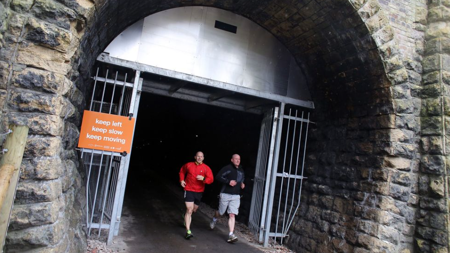
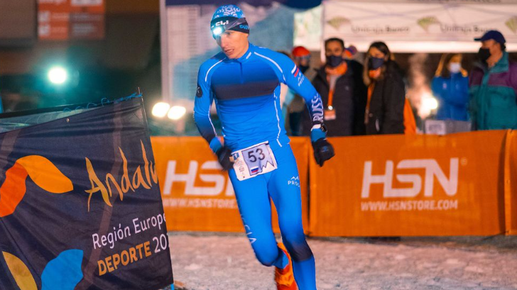
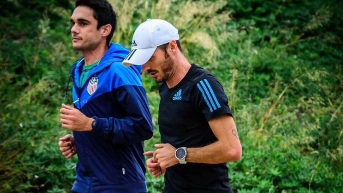

Entradas
Españoles destacados en el Maratón de Sevilla
Los maratonianos internacionales Dani Mateo, Jorge Blanco y Laura Méndez destacan en el elenco de atletas de élite españoles que disputarán el próximo domingo 19 de febrero el Zúrich Maratón de Sevilla y que ha sido presentado este martes. La organización presume de un grupo de atletas de máximo nivel, con 30 hombres con marcas acreditadas en menos de 2 horas y 12 minutos y 20 mujeres por debajo de 2h32.
#instarunners #runnersworld #runnerslife #worlderunners #runnershigh #runnerspace #worldrunners #wearetherunners #trailrunners
321 kilómetros por un túnel oscuro
La mayoría de la gente corre en la oscuridad por necesidad: madruga para correr, sale a última hora de la tarde en invierno. Y el motivo no es otro que las obligaciones laborales, familiares y sociales les impiden hacerlo a plena luz del día, especialmente cuando las horas de luz escasean.30 hombres con marcas acreditadas en menos de 2 horas y 12 minutos y 20 mujeres por debajo de 2h32.
#instarunners #runnersworld #runnerslife #worlderunners #runnershigh #runnerspace #worldrunners #wearetherunners #trailrunners
l Snow Running Sierra Nevada acogerá el próximo fin de semana a 1.300 atletas
El último fin de semana del mes de enero acoge la primera prueba deportiva en la estación de esquí de Sierra Nevada. La Snow Running Sierra Nevada 2023 se celebrará este viernes, con su prueba Vertical de 4,3 km y el sábado con la Clásica de 12,7 kms.
#instarunners #runnersworld #runnerslife #worlderunners #runnershigh #runnerspace #worldrunners #wearetherunners #trailrunners
Toni Abadía se pasa al duatlón en Fraga
Sin intención de abandonar el atletismo, Toni Abadía se cambió de deporte y se estrenó este domingo en el X Duatlón Ciudad de Fraga (Huesca), donde terminó en quinto puesto, a 2:07 minutos del vencedor Javier Coscolla. Al zaragozano se le notó demasiado su especialización: ganó los dos tramos de carrera a pie de 5 y 2,5 kilómetros, pero sufrió en bicicleta, donde hasta 41 deportistas fueron más rápidos en los 21,5 kilómetros centrales.
#instarunners #runnersworld #runnerslife #worlderunners #runnershigh #runnerspace #worldrunners #wearetherunners #trailrunners